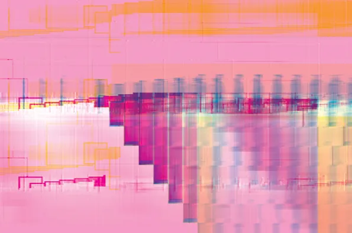
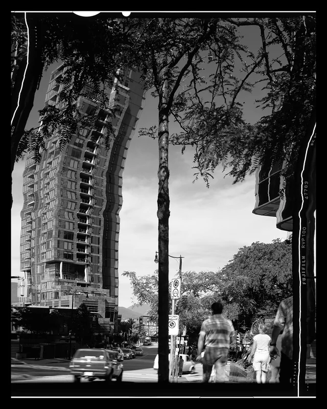
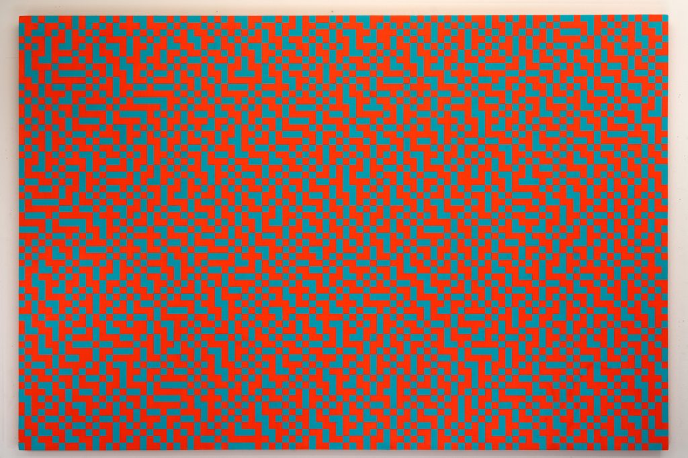

This guest lecture has taken me deep into a creative field I wasn’t familiar with before: Computational Aesthetics and Code-based Art. The lecturer not only showed how he intervenes in images through programming, but also introduced his experimental creations in different media such as film photography, pixel manipulation, and language construction. The entire lecture made me re-recognize that writing code is not only a functional technology, but can also be a means of visual art and cultural criticism.
The speaker initially generated a series of fragmented yet rhythmic images by tampering with the digital structure of image files, calling the process glitch-based practice. He demonstrated how to use an audio editor to open image data, overlay effectors to disrupt information in each channel, and then re-import the data into Photoshop to compose new images.

Fulleylove, R. (2012) Daniel Temkin: Glitchometry Stripes [Online image]. It’s Nice That [online] (Accessed: 10 February 2025)
He emphasized that the unpredictability, repeatability, and handmade aesthetics of this process are similar to ceramic art that you can control the structure, but each result has slight deviations and it’s precisely these “errors” that bring aesthetic charm.
Another impressive series is “Straightening Trees”, where the speaker photographed trees with a large-format film camera and used programming to straighten the bent trunks causing backgrounds (buildings, sidewalks, etc.) to stretch irregularly alongside.

Reddit (u/EconHacker) (2019) Daniel Temkin ‘straightens trees’ by bending the things around them [Online image]. Reddit [online]. Published c. 4.9 years ago. Available at: Reddit (Accessed: 10 February 2025)
“I straighten trees like combing hair.”
This description is both physically evocative and implies how technical operations reshape the logic of real-world images.
The series explores the absurdity of digital manipulation: Why must we correct natural asymmetry? And how does technology extend a logical instruction to the entire world?
In the “Dither Studies” project, the speaker deeply explored the error-diffusion algorithm, using minimalist pixel combinations to simulate image details. By setting different dithering kernels, he observed how images with only two or three colors form a visual language between details, grayscale, order, and chaos.

Temkin, D. (n.d.) Glitchometry – Daniel Temkin [Online image]. Available at: https://danieltemkin.com/Glitchometry/ (Accessed: 10 February 2025)
He also experimented with non-rectangular pixels (such as triangles) to construct images, and translated these into digital animations, interactive web pages, and even physical installations for exhibitions. This body of work revealed to me that constraints themselves are generators of creativity and that dithered images are not merely technical problems, but aesthetic experiments.
The speaker also introduced how he creates his own programming languages as artistic expressions, including:
- The “2014 Language” that can only run in 2014;
- A language written through empty folder structures (encoding emptiness itself);
- Programming grammars built with indigenous languages to decentralize and oppose the hegemony of mainstream languages.
He emphasized that programming languages are not just for making machines understand, but also for prompting people to rethink language, power, and modes of expression.
Reflection
This lecture made me realize that technology is not just a tool, but a material. Coding isn’t just about making things happen, but also about creating another way to see the world. I’ve started to rethink my relationship with technology could I also try to create works with thought, critique, and visual tension through parameters, data, algorithms, and language itself?